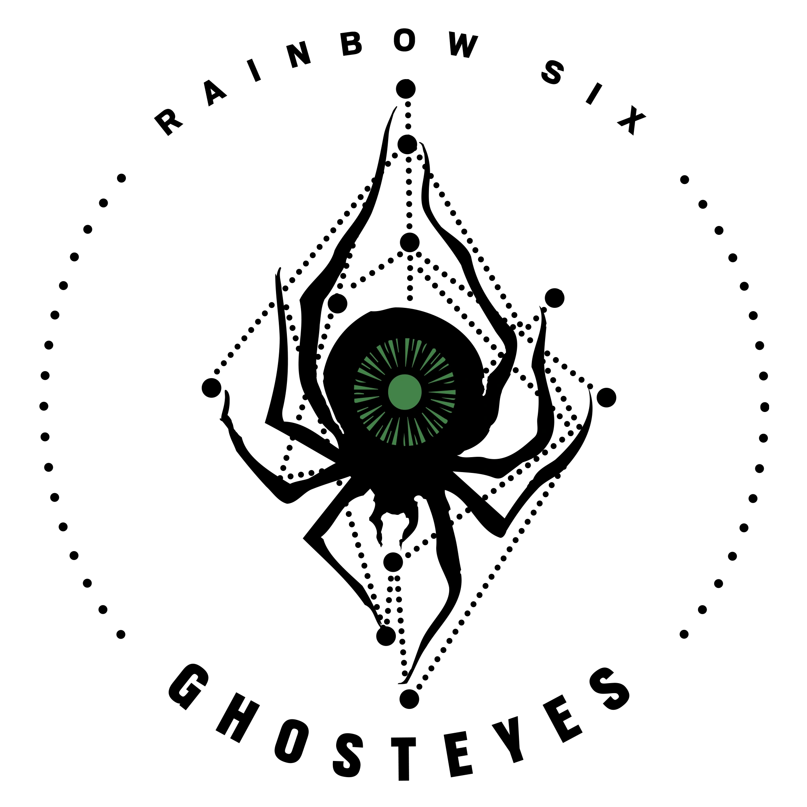

Név: Nienke Meijer
Születési dátum:1989 Augusztus 27.
Születési hely: Katwijk, Hollandia
"All systems are complementary, if you know how to connect them.”
Meijer édesanyja a Huygens Atmoszféra-szerkezetű műszert vezető mérnök volt, amely leszállt a Titánra. Korán ösztönözték arra, hogy elérje a csillagokat, és űrhajózási mérnöki tanulmányokat folytatott azzal a céllal, hogy vadászpilóta legyen. Sajnos az albinizmusa miatt kompromittált retinája volt, és kérelmét elutasították. A figyelmét rendszermérnöki tanulmányaira összpontosította, olyan kontaktlencséket fejlesztve, amelyek túlkorrigálták genetikai hiányosságait, miközben integráltak egy modern AR átfedést. A doktori tanulmányai során kezdte meg Meijer azon kutatását, amelyet mindig is vágyott. A Nemzetközi Űrállomásról való visszatérés csak tovább fokozta vágyát, hogy felfedezze a világegyetem legtávolabbi részeit, bármi áron. Kifejlesztett egy topográfiai térképező szoftvert, amely lehetővé teszi számára, hogy valós idejű, virtuális másolatát vetítse bárhová, ahol a műholdak vagy drónok által látható. Ez a technológia fogta fel Elena "Mira" Álvarez és később Six figyelmét.
Szervezet: Ghosteyes 